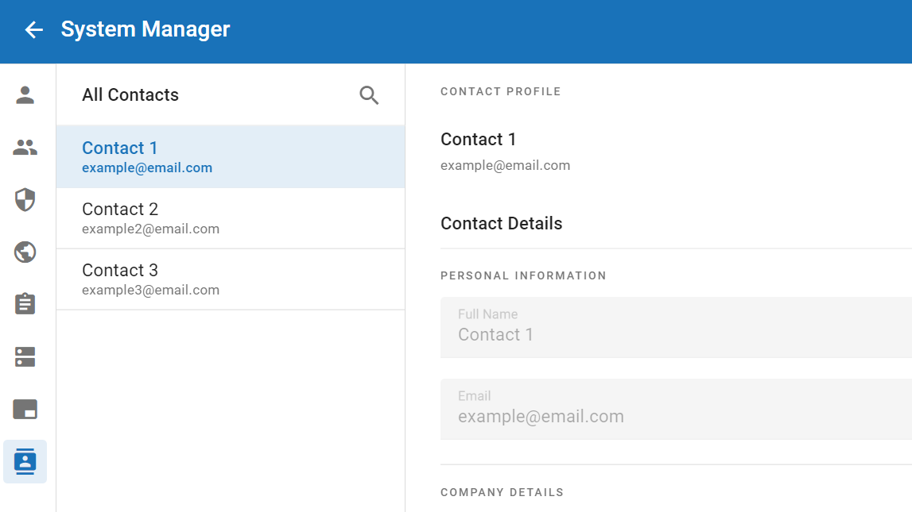

Manage Contacts
Contacts are the individual senders/receivers of media.
They can be created in System Manager or while you are defining a
delivery. The following figure shows the Contacts summary page:

Use the following procedures to configure contacts:
-
Add New Contacts
-
Modify Contact Details
-
Delete Contacts